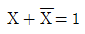
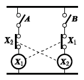
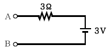
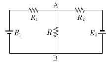

소방설비산업기사(전기) (2004-09-05 기출문제)
1과목: 소방원론
1. 콘크리트에 대한 설명 중 틀린 것은?
- 콘크리트와 강재의 열팽창률은 거의 같다.
- 콘크리트의 열전도율은 목재보다 적다.
- 콘크리트는 장시간 화재에 노출되면 강도는 저하한다.
- 콘크리트는 인장력에 대하여 아주 약하다.
(정답률: 42%)

2. 연소시 전형적인 분해연소의 특성을 보여주는 것은?
- 목재
- 나프탈렌
- 휘발유
- 흑연
(정답률: 73%)
3. 초기화재의 소화용으로 사용되지 않는 것은?
- 스프링클러설비
- 소화기
- 옥내소화전설비
- 연결송수관설비
(정답률: 94%)
4. 가연성 증기를 발생하는 액체 또는 고체와 공기의 계에 있어서 기체상 부분에 다른 불꽃이 닿았을 때 연소가 일어나는데 필요한 액체 또는 고체의 최저온도가 존재한다. 이 온도를 어떤 점이라 하는가?
- 발화점(ignition point)
- 인화점(flash point)
- 연소점(fire point)
- 산화점(oxidation point)
(정답률: 70%)
5. 중질유의 석유탱크에서 장시간 조용히 연소하다 탱크내의 잔존기름이 갑자기 분출하는 현상을 무엇이라고 하는가?
- 프로스오버(Froth over)
- 슬롭오버(Slop over)
- 플래시오버(Flash over)
- 보일오버(Boil over)
(정답률: 68%)
6. 건축물의 주요구조부에 해당하는 것은?
- 작은 보
- 옥외계단
- 지붕틀
- 최하층 바닥
(정답률: 77%)
7. 다음 원소 중에서 난연 성능이 없는 것은?
- 인(P)
- 안티몬(Sb)
- 아연(Zn)
- 비소(As)
(정답률: 43%)
8. 불티가 바람에 날리거나 또는 화재 현장에서 상승하는 열기류 중심에 휩쓸려 원거리 가연물에 착화하는 현상을 무엇이라 하는가?
- 비화
- 전도
- 대류
- 복사
(정답률: 66%)
9. 다음은 LNG에 대한 설명이다. 잘못된 것은?
- 투명하면서 무색의 기체로 누설시 쉽게 인지하기 위하여 부취제를 첨가한다.
- 증기비중이 낮기 때문에 누설시 창문틈 등을 통하여 밖으로 배출된다.
- 탄소와 수소로 이루어진 기체 탄화수소이다.
- 프로판과 부탄이 주성분이다.
(정답률: 60%)
10. 다음 위험물 중에서 물을 사용하여 소화하면 더 보 두께 5cm 이상의 콘크리트로 덮은 것 위험해지는 것은?
- 피크린산
- 질산암모늄
- 알루미늄분
- 질화면
(정답률: 45%)
11. 프로판가스는 소방안전관리상 위험하다. 그 이유로 가장 적당한 것은?
- 프로판가스는 상온에서 기체상태로 존재하며 폭발범위가 수소보다 넓다.
- 프로판가스는 연소하한계 값이 높아 화재위험성이 낮다.
- 프로판가스의 비중은 공기보다 무거워 바닥에 가라 앉는다.
- 프로판가스는 도시가스보다 비중이 가볍다.
(정답률: 46%)
12. 내화구조에 해당되는 것은?
- 철망 모르타르 바르기로 그 두께가 2cm인 것
- 시멘트 모르타르 위에 타일을 붙여 그 두께가 2.5cm인 것
- 철골에 두께 5cm의 콘크리트를 덮은 것
- 무근 콘크리트조로서 그 두께가 5cm인 것
(정답률: 63%)
13. 건축물에 있어서 화재시 연소의 확대를 방지하기 위하여 방화구획을 설정하고 있다. 이때 방화 구획의 구획기준이 아닌 것은?
- 피난구획
- 수평구획
- 수직구획
- 용도구획
(정답률: 55%)
14. 지하 주차장에 사용할 수 있는 법정 분말 소화약제는?
- 인산염계
- 탄화수소나트륨계
- 탄화수소칼륨계
- 탄화수소칼륨과 요소계
(정답률: 57%)
15. 분말소화약제 중 A, B, C급의 어떤 화재에도 사용할 수 있는 것은?
- 제3종 분말소화약제
- 제1종 분말소화약제
- 제2종 분말소화약제
- 제4종 분말소화약제
(정답률: 84%)
16. 건물의 굴뚝효과(stack effect)에 관한 설명 중 옳지 않은 것은?
- 평상시 건물내의 기류분포를 지배하는 중요한 요소이며, 화재시 연기의 이동에 큰 영향을 미친다.
- 실내 온도가 실외 온도보다 높은 경우, 저층부에서는 외부에서 실내 방향으로 공기의 흐름이 생긴다.
- 고층건물에서는 잘 나타나지 않고 주로 저층 건물에서 나타나는 효과이다.
- 온도에 따른 공기의 밀도차 때문에 발생되는 공기의 흐름 현상이다.
(정답률: 80%)
17. 화재시 연기가 인체에 영향을 미치는 요인 중 가장 나쁜 것은?
- 연기 중의 부유물질
- 일산화탄소의 증가와 산소의 감소
- 연기 중의 고정탄소의 양
- 연기 속에 포함된 수분의 양
(정답률: 85%)
18. 가스화재 진압시 최우선적으로 취해야 하는 조치는?
- 가스 누출원을 차단한다.
- 누출된 가스를 안전하게 확산시킨다.
- 용기, 탱크 등을 식힌다.
- 경계구역을 설정한다.
(정답률: 82%)
19. 다음 설명 중 잘못된 것은?
- 발열량은 고발열량과 저발열량으로 나눈다.
- 발열량이란 단위량의 연료가 25℃, 1atm하에서 완전연소될 때 발생하는 열량을 말한다.
- 실질적으로 사용되는 발열량은 저발열량이다.
- 저발열량은 연소시 생성된 수증기의 증발잠열을 제외한 값이다.
(정답률: 41%)
20. 특수가연물에 해당되지 않는 것은?
- 면화류
- 사류
- 볏짚류
- 메틸알코올
(정답률: 70%)
2과목: 소방전기회로
21. 불대수의 정리가 틀린 것은?

- X+1=1
- X+XY=X
- X+Y=XY
(정답률: 48%)
22. 계전기 접점의 불꽃을 소거할 목적으로 사용되는 반도체 소자는?
- 바리스터
- 더미스터
- 바랙터 다이오드
- 터널 다이오드
(정답률: 69%)
23. 그림과 같은 회로의 명칭은?

- 정지우선 자기유지회로
- 한시접점회로
- 인터록회로
- 플립플롭회로
(정답률: 64%)
24. 전압 200V, 주파수 60Hz, 4극 10HP인 3상 유도전동기의 동기속도는 몇 rpm인가? (단, 이때 전동기의 역률은 0.85라고 한다.)
- 1200
- 1800
- 2400
- 3600
(정답률: 39%)
25. 내부저항이 무한대인 전압계로 그림 A-B간의 전압을 측정하면 몇 V가 되는가?

- 0
- 1.5
- 2
- 3
(정답률: 65%)
26. 0.5H인 코일의 리액턴스가 753.6Ω일 때 주파수는 몇 Hz인가?
- 60
- 120
- 240
- 360
(정답률: 47%)
27. 자체인덕턴스가 각각 250mH, 360mH인 두코일이 있다. 두 코일 사이의 상호인덕턴스가 210mH라면 결합계수는 얼마인가?
- 0.3
- 0.5
- 0.7
- 0.8
(정답률: 46%)
28. 100kVA 변압기 2대로 공급할 수 있는 3상전력은 최대 몇 kVA인가?
- 150
- 173
- 200
- 300
(정답률: 75%)
29. 단면적이 5cm2인 도체가 있다. 이 단면을 3초 동안 30C의 전하가 이동하면 전류는 몇 A인가?
- 2
- 10
- 20
- 90
(정답률: 69%)
30. 자동제어 분류에서 제어량에 의한 분류가 아닌 것은?
- 프로세스제어
- 자동조정
- 서보기구
- 정치제어
(정답률: 40%)
31. 목표값이 미리 정해진 시간적 변화를 하는 경우 제어량을 그것에 추종시키기 위한 제어는?
- 추종제어
- 정치제어
- 비율제어
- 프로그래밍제어
(정답률: 23%)
32. 소비전력이 가장 큰 것은?
- 100V의 전압에 8A의 전류가 흐를 때
- 110V의 전압에 10A의 전류가 흐를 때
- 220V의 전압에 3A의 전류가 흐를 때
- 380V의 전압에 2A의 전류가 흐를 때
(정답률: 64%)
33. 조절부와 조작부로 이루어진 것을 무엇이라 하는가?
- 제어요소
- 제어대상
- 피드백요소
- 기준입력요소
(정답률: 67%)
34. 전기계기에서 측정하려는 전기적인 양에 비례하는 구동토크를 일으키는 장치로서 가동 부분을 동작시키는 장치는?
- 구동장치
- 제어장치
- 제동장치
- 반발장치
(정답률: 72%)
35. 선간전압이 220V인 3상 전원에 임피던스가 Z=8+j6[Ω]인 3상 Y부하를 연결할 경우 상전류는 몇 A인가?
- 5
- 12.7
- 18.4
- 22
(정답률: 54%)
36. 개루프 시스템의 주된 장점이 아닌 것은?
- 원하는 출력을 얻기 위해서 보정을 해 줄 필요가 없다.
- 시스템을 구성하기가 쉽다.
- 시스템의 구성단가가 낮다.
- 보수 및 유지관리가 간단하다.
(정답률: 56%)
37. 각종 소방설비의 표시등에 많이 사용되는 발광다이오드[L.E.D]에 대한 설명이다. 잘못된 것은 어느 것인가?
- 전구에 비해 수명이 길고 진동에 강하다.
- PN 접합에 순방향 전류를 흘림으로써 발광시킨다.
- 표시등 중에서 응답속도가 가장 느리다.
- 발광다이오드의 재료로 GaAs, GaP 등이 사용된다.
(정답률: 75%)
38. 이상적인 연산증폭기(OP-Amp)의 특징이 아닌 것은?
- 고입력 임피던스
- 넓은 주파수 특성
- 저출력 임피던스
- 낮은 개루프 이득
(정답률: 58%)
39. 30F의 콘덴서 3개를 직렬로 연결하면 합성 정전 용량은 몇 F인가?
- 10
- 30
- 60
- 90
(정답률: 45%)
40. 기전력이 각각 E1 및 E2인 전지를 그림과 같이 접속했을 때 A, B간의 전류가 0이 되기 위한 조건은?

- R1E1=E2E2
- R1E2=R2E1
- R1E2=R1E2
- R1E2=R2
(정답률: 46%)
3과목: 소방관계법규
41. 화재예방, 소방활동, 소방훈련을 위하여 사용되는 소방신호의 종류와 방법은 무엇으로 정하는가?
- 지방자치령
- 대통령령
- 행정안전부령
- 치안본부령
(정답률: 57%)
42. 화재경계지구의 지정대상지역이 아닌 것은?
- 공장이 밀집한 지역
- 고층건물이 많은 지역
- 위험물의 저장 및 처리시설이 밀집한 지역
- 소방시설 또는 소방출동로가 없는 지역
(정답률: 60%)
43. 소방본부장 또는 소방서장이 화재예방이나 소화 활동을 위하여 명령할 수 있는 사항이 아닌 것은 어느 것인가?
- 불장난, 흡연의 금지 또는 제한
- 화기가 있을 우려가 있는 재의 처리
- 방치되어 있는 위험물의 이동
- 연소의 우려가 있는 소유자 불명의 물질에 대한 폐기
(정답률: 46%)
44. 화재의 현장에 소방활동구역을 설정하여 그 구역의 출입을 제한시킬 수 있는 사람은?
- 소방안전관리자
- 소방대상물의 관계인
- 구역내에 있는 소방대상물의 근무자
- 소방대장
(정답률: 70%)
45. 소방신호의 종류 중에서 타종신호방법이 난타인 신호는?
- 경계신호
- 발화신호
- 해제신호
- 훈련신호
(정답률: 56%)
46. 소방청장, 소방본부장 또는 소방서장이 실시하는 소방특별조사의 서면통지일로 옳은 것은?
- 24시간 전
- 24시간 후
- 7일 전
- 7일 후
(정답률: 75%)
47. 소방시설관리사가 되고자 하는 사람은 누가 실시하는 시험에 합격하여야 하는가?
- 소방청장
- 소방서장
- 경찰서장
- 고용노동부장관
(정답률: 57%)
48. 소화활동설비에 해당되는 것은?
- 상수도소화용수설비
- 비상콘센트설비
- 옥내소화전설비
- 비상방송설비
(정답률: 41%)
49. 제연설비는 어느 설비에 해당하는가?
- 소화설비
- 소화활동설비
- 경보설비
- 피난설비
(정답률: 50%)
50. 옥외소화전설비를 설치하여야 할 소방대상물은 지상 1층 및 2층의 바닥면적의 합계가 몇 m2 이상인 것인가?
- 3000
- 6000
- 9000
- 12000
(정답률: 29%)
51. 층수가 몇 층 이상인 관광호텔에는 반드시 인명 구조기구를 설치하여야 하는가?
- 5
- 7
- 9
- 11
(정답률: 37%)
52. 운동시설로서 무대부의 바닥면적이 몇 m2 이상인 경우 제연설비를 설치하여야 하는가?
- 200
- 300
- 400
- 500
(정답률: 35%)
53. 비상경보설비를 설치하여야 할 특정소방대상물 중 잘못된 것은?
- 50인 이상의 근로자가 작업하는 옥내작업장
- 지하가 중 터널로서 길이가 500m 이상인 것
- 연면적이 500m2 이상인 것
- 지하층 또는 무창층의 바닥면적이 150m2 이상인 것
(정답률: 38%)
54. 근린생활시설, 위락시설, 숙박시설 등은 연면적 몇 m2 이상인 경우에 자동화재탐지설비를 설치 하여야 하는가?
- 400
- 600
- 800
- 1000
(정답률: 58%)
55. 소방공사감리업의 종류별 구분으로 옳은 것은?
- 제1종 소방공사감리업 및 제2종 소방공사감리업
- 갑종 소방공사감리업 및 을종 소방공사감리업
- 일반 소방공사감리업 및 특수 소방공사감리업
- 전문 소방공사감리업 및 일반 소방공사감리업
(정답률: 51%)
56. 소방시설업자가 등록사항의 변경을 신고하지 않아도 되는 것은?
- 영업소의 소재지
- 사무실 임대계약 금액
- 상호 또는 명칭
- 기술인력
(정답률: 77%)
57. 전문소방시설설계업을 등록하고자 할 때 주된 기술인력에 대한 기준에 맞는 것은?
- 기계분야 또는 전기분야 소방설비기사 자격자 1명 이상
- 기계분야 소방설비기사 자격자 1명 이상 과 전기분야 소방설비산업기사 자격자 1명이상
- 기계분야와 전기분야를 겸하여 취득한 경우에는 겸하여 취득한 소방설비기사 자격자 1명 이상
- 소방기술사 1명 이상
(정답률: 56%)
58. 1급 소방안전관리대상물에 두어야 할 소방안전관리자로 선임될 수 없는 사람은?
- 위험물기능사 자격을 가진 사람으로서 위험물 안전관리자로 선임된 사람
- 소방공무원으로 7년 이상 근무한 경력이 있는 사람
- 소방설비기사 또는 소방설비산업기사의 자격을 가진 사람
- 경위 이상의 경찰공무원으로 3년 이상 근무한 경력이 있는 사람
(정답률: 56%)
59. 위험물 옥내저장소에 6류 위험물을 저장할 경우 하나의 저장창고 바닥면적은 몇 m2 이하로 하여야 하는가?
- 300
- 500
- 800
- 1000
(정답률: 26%)
60. 공사를 수행중인 소방시설공사업자에게 등록의 취소 또는 영업의 정지처분 등이 있는 경우에는 지체없이 누구에게 알려야 하는가?
- 해당 지역의 소방본부장 또는 소방서장
- 등록하였던 해당 관청
- 공사중인 특정소방대상물의 관계인
- 해당 지역의 소방안전협회
(정답률: 38%)
4과목: 소방전기시설의 구조 및 원리
61. 옥내소화전설비의 표시등에 대한 설명으로 옳은 것은?
- 위치표시등과 기동표시등은 모두 불이 켜진 상태로 있어야 한다.
- 위치표시등과 기동표시등은 모두 불이 켜지지 않은 상태로 있어야 한다.
- 위치표시등은 평상시 불이 켜지지 않은 상태로 있어도 된다.
- 기동표시등은 평상시 불이 켜지지 않은 상태로 있어야 한다.
(정답률: 35%)
62. 자동화재속보설비의 속보기는 화재시에 화재속보를 계속해서 몇 회 이상 속보할 수 있어야 하는가?
- 1
- 2
- 3
- 5
(정답률: 78%)
63. 정온식 감지선형 감지기 설치에서 감지선형 감지기의 굴곡반경은 몇 cm 이상으로 하여야 하는가?
- 2
- 3
- 5
- 6
(정답률: 64%)
64. 자동화재탐지설비의 발신기는 소방대상물의 층마다 설치하되, 해당 소방대상물의 각 부분으로 부터 하나의 발신기까지의 수평거리가 몇 m 이하가 되도록 하여야 하는가?
- 15
- 20
- 25
- 30
(정답률: 62%)
65. 발신기를 분류한 것으로 옳은 것은?
- M형
- T형
- G형
- P형
(정답률: 68%)
66. P형 수신기에 대한 설명 중 틀린 것은?(오류 신고가 접수된 문제입니다. 반드시 정답과 해설을 확인하시기 바랍니다.)
- 화재표시 작동시험을 할 수 있을 것
- 외부배선의 도통시험을 할 수 있을 것
- 예비전원의 양부를 시험할 수 있을 것
- 회선수가 5 이하일 것
(정답률: 58%)
67. 부착면의 높이가 8m 이상 15m 미만의 장소에는 사용하지 않는 감지기는?
- 차동식 분포형
- 정온식 스포트형
- 이온화식 2종
- 광전식 1종
(정답률: 39%)
68. R형 수신기의 특징으로 틀린 것은?
- 선로수가 적게 들어 경제적이다.
- 증설 또는 이설이 비교적 용이하다.
- 중계기를 거치지 않음으로 신속하다.
- 신호의 전달이 정확하다.
(정답률: 59%)
69. 제연설비의 비상전원은 제연설비를 몇 분간 유효하게 동작할 수 있어야 하는가? (단, 30층 미만이다.)
- 10
- 20
- 30
- 60
(정답률: 40%)
70. 자동화재탐지설비의 주된 요소가 아닌 것은?
- 수신기
- 감지기와 배선
- 음향장치
- 누전경보기
(정답률: 57%)
71. 비상콘센트설비의 설치기준으로 옳지 않은 것은 어느 것인가?
- 지하층을 제외한 층수가 11층 이상의 각층에 설치할 것
- 바닥으로부터 높이 0.8m 이상, 1.5m 이하의 위치에 설치할 것
- 해당 층의 각 부분으로부터 보행거리 50m이하마다 설치할 것
- 단상교류 200V의 것에는 접지형 2극플러그 접속기를 사용할 것
(정답률: 38%)
72. 자동화재탐지설비에서 수신기의 조작스위치는 바닥으로부터의 높이가 몇 m 이상, 몇 m 이하인 장소에 설치하여야 하는가?
- 0.3m 이상, 0.8m 이하
- 0.5m 이상, 1.2m 이하
- 0.8m 이상, 1.5m 이하
- 1m 이상, 1.8m 이하
(정답률: 84%)
73. 1급 누전경보기는 경계전로의 정격전류가 몇 A를 초과하는 전로에 설치하는가?
- 60
- 50
- 40
- 30
(정답률: 75%)
74. 주요 구조부를 내화구조로 한 소방대상물에 감지기의 부착높이를 4m 미만으로 부착한 보상식 스포트형 2종 감지기 1개의 감지면적은 몇 m2를 기준하는가?
- 90
- 70
- 40
- 25
(정답률: 35%)
75. 비상방송설비에서 확성기를 실외에 설치하는 경우 확성기의 음성입력은 몇 W 이상이어야 하는가?
- 1
- 2
- 3
- 4
(정답률: 83%)
76. P형 수신기의 감지기회로 배선을 공통선으로 사용한 때에 하나의 공통선은 몇 경계구역 이하로 하여야 하는가?
- 3
- 5
- 7
- 15
(정답률: 44%)
77. 자동화재탐지설비의 수신기 전면에 전압계의 지시치가 0일 경우 그 원인으로 볼 수 없는 것은?
- 정류기 고장일 때
- 전압계 고장일 때
- 전원전압회로의 고장일 때
- 감지기 고장일 때
(정답률: 53%)
78. 비상벨 설비 또는 자동식 사이렌 설비에는 그 설비에 대한 감시상태를 몇 분간 지속한 후 유효하게 10분 이상 경보할 수 있는 축전지설비를 설치 하여야 하는가?
- 10
- 20
- 40
- 60
(정답률: 72%)
79. 유도등과 유도표지는 소방관련법령상 어떤 종류의 소방시설에 포함되는가?
- 경보설비에 속한다.
- 소방설비에 속한다.
- 피난설비에 속한다.
- 소화활동설비에 속한다.
(정답률: 77%)
80. 무선통신보조설비의 누설동축케이블은 소방전용주파수대에서 전파의 전송 또는 복사에 적합한 것으로서 소방전용의 것으로 하여야 한다. 그러나 다른 용도와 겸용할 수 있는 경우가 있는데 그 경우의 기준으로 옳은 것은?
- 경찰과 무선연락을 하고자 하는 경우
- 민간 구급단체와 교신을 하고자 할 경우
- 화재현장의 관계인과 통화를 하고자 할 경우
- 소방대 상호간의 무선연락에 지장이 없는 경우
(정답률: 40%)